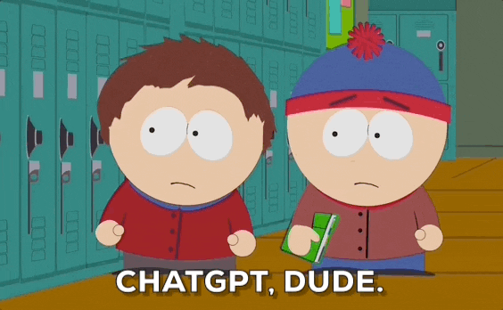

ChatGPT é um chatbot desenvolvido pela OpenAI e lançado em 30 de novembro de 2022. O nome "ChatGPT" combina "Chat", referindo-se à sua funcionalidade de chatbot, e "GPT", que significa Generative Pre-trained Transformer, um tipo de modelo de linguagem grande. Wikipédia
O ChatGPT app é uma ferramenta para processamento de linguagem natural treinada pela OpenAI. A plataforma é capaz de responder a perguntas sobre os mais variados assuntos, resolver problemas lógicos e fornecer soluções adequadas aos inputs que recebe por meio de mensagens com contexto, simulando uma conversa. Testado por milhões de usuários em poucas semanas desde o seu lançamento, o ChatGPT consegue conversar em diversos idiomas sobre inúmeros temas e até mesmo criar conteúdo com base em tópicos relacionados disponíveis na internet. Desde a sua fase de testes, o usuário já pode, por exemplo, pedir para que a Inteligência Artificial responda a questões sobre eventos históricos, explique a definição de objetos e conceitos, gere textos a respeito de diversos temas, explique o funcionamento de tecnologias, entre outras tarefas resolvidas por meio de diálogo. Tudo isso ocorre em uma janela de chat com respostas digitadas em tempo real.